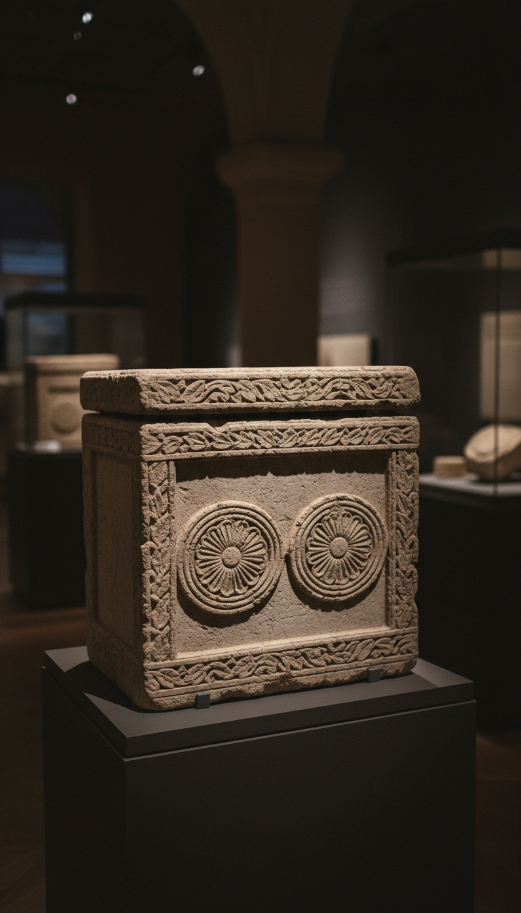

The high priest who handed Jesus to Pilate left behind a limestone box with his own name carved into it, and that box sits in a Jerusalem museum today.
Most people treat the trial of Jesus as scripture, something you take on faith or leave alone. Then in November 1990 the ground under a Jerusalem construction site gave way and dropped a work crew into the family tomb of the man who ran that trial. His bones were inside. His name was on the lid.

The Cave Under the Peace Forest
The site was the Peace Forest in North Talpiot, a ridge about a mile and a half south of the Old City walls. Crews were cutting a road and building a park there when the roof of a buried chamber collapsed under their heavy equipment. Work stopped. The Israel Antiquities Authority sent archaeologist Zvi Greenhut to see what the machines had opened.
What he found was a classic Second Temple burial cave. It had a central chamber, burial niches cut into the rock walls, and twelve ossuaries. An ossuary is a limestone bone box. Jerusalem families in the first century laid their dead in a niche for about a year, then gathered the bones into one of these boxes. Robbers had already been through the cave in antiquity. Several boxes were broken or shoved out of place. One box was intact, and it made every other box in that cave look cheap.
Joseph, Son of Caiaphas
The standout ossuary was covered in carving. Two large circles filled with rosettes ran across its face, framed by a border of cut foliage, all worked deep into the soft Jerusalem limestone. The rest of the boxes in the cave were plain or scratched with simple marks. This one was a commission.
Scratched onto it, twice, was a name in Aramaic: Yehosef bar Qayafa. Joseph son of Caiaphas. A shorter form, Qafa, appeared on the side. The epigrapher Ronny Reich read the inscriptions and published them in 1992, alongside Greenhut's excavation report in the journal Atiqot and a feature in Biblical Archaeology Review the same year. The name that had lived only in the Gospels and a Roman-era history book was now cut into stone in a sealed tomb.
Three Witnesses Name the Same Man
The Gospel of Matthew, chapter 26, has the arresting party lead Jesus to "Caiaphas the high priest, where the scribes and the elders were assembled." The Gospel of John, chapter 18, puts Jesus first before Annas, "the father-in-law of Caiaphas, which was the high priest that same year," then has him sent bound to Caiaphas, and from Caiaphas to Pilate's headquarters at dawn. Luke 3:2 names Caiaphas as high priest when John the Baptist began preaching.
The third witness is the hardest to wave off, because he had no stake in the Christian story at all. Flavius Josephus, a Jewish priest and historian writing for a Roman audience in the 90s AD, records in Antiquities of the Jews 18.35 that the Roman prefect Valerius Gratus appointed "Joseph, who was called Caiaphas" as high priest. In 18.95 he records that the Syrian governor Vitellius removed him. Those two events bracket roughly 18 to 36 AD.
Pontius Pilate governed Judea from 26 to 36 AD. Caiaphas held the high priesthood for the entire decade Pilate was in power, longer than any other high priest of the Roman era. That is the window for the trial. Two Gospels, one hostile Jewish historian, and one tomb all point at a single man named Joseph Caiaphas.
The man who sent Jesus to the cross was buried a short walk from the city where it happened, and his family carved his name on the box that held his skull.
The Bones of a Man About Sixty
Inside the ornate ossuary, the anthropologists found the mixed remains of six people. Two infants. A child between two and five. A teenage boy. An adult woman. And a man of about sixty.
Do the math on that man. A high priest appointed around 18 AD and removed in 36 AD, serving a long run after his father-in-law Annas, would reach his sixties in exactly the years when this tomb was in use. The box with the finest carving held the oldest adult male in the family. In a priestly family, the finest box goes to the patriarch.
The wealth tells the same story. Elaborate ossuaries were luxury goods, cut by specialist craftsmen, and the Temple aristocracy was the richest class in Jerusalem. The high priesthood controlled the Temple treasury, the sacrificial trade, and the money changers' tables that Jesus overturned. A family with ordinary means would have bought a plain box. This family bought the best box in the cave and put the patriarch in it. One more detail came out of the cave: in a second ossuary, the skull of a woman held a bronze coin minted under Herod Agrippa I around 42 AD. That coin dates the burials squarely to the generation after the crucifixion.
The Spelling Fight Breaks on the Stone
The strongest objection to the box is about spelling. A handful of scholars, writing in the years after 1992, argued the Aramaic letters could be read as Qopha or Qepha rather than Caiaphas, and that the short form Qafa pointed to some other family entirely.
That objection collapses three ways. First, Josephus gives the name in exactly the pairing on the box: a man named Joseph who was known as Caiaphas. Second, the Greek Kaiaphas in the Gospels is the natural way to render Qayafa, and the box spells it out in full twice. Third, in 2011 Boaz Zissu of Bar-Ilan University and Yuval Goren of Tel Aviv University published a second ossuary, recovered from antiquities looters, inscribed "Miriam daughter of Yeshua son of Caiaphas, priests of Ma'aziah from Beth Imri." Goren's lab tested the patina and confirmed the inscription was ancient. That box spells the family name the same way and ties it directly to a named division of Temple priests.
So the name is real, the family is real, and the family was priestly. The spelling fight does the opposite of what the skeptics wanted. It pulled a second Caiaphas box out of the ground and stamped "priests" on it.
The Room Where the Evidence Sits
Today the Caiaphas ossuary is on display at the Israel Museum in Jerusalem. Walk that archaeology wing and the trial of Jesus stops being a story and starts being a lineup of physical objects.
The same museum holds the Pilate Stone, a limestone block found at the theater in Caesarea Maritima in 1961, carved with the name of Pontius Pilate as prefect of Judea. It displays a cast of the heel bone of Jehohanan, a crucified man excavated at Giv'at ha-Mivtar in Jerusalem in 1968, with an iron nail still driven through the bone. And it holds the box of the high priest who handed Jesus to Pilate. The judge, the prosecutor, and the method of execution are all in one building, each one pulled from the soil within a few miles of Golgotha.
Now go back to that cave in the Peace Forest, because Greenhut's team found more than bones. Two corroded iron nails were recovered from the tomb, one of them from inside an ossuary. Nobody explains why a family would bury nails with their dead. They were catalogued and then sat in a Tel Aviv University storeroom for two decades. In 2020 the geologist Aryeh Shimron published an analysis in the journal Archaeological Discoveries reporting traces of bone and ancient wood fused into the corrosion on those nails.
Iron nails with bone and wood on them, buried in the tomb of the high priest who condemned Jesus. Why would Caiaphas, of all men, take crucifixion nails to his grave? Tell me what you think he was keeping, and who he was keeping it from.
Before you go
7 books the Vatican doesn't want you reading. Free PDF — the texts they cut, with sources. Joined by 140+ Inner Circle members.
No spam. Unsubscribe anytime.
Go deeper
The Hidden Canon, Vol. I — Enoch. Jubilees. Thomas. Mary. Judas. 90 pages, 14 chapters, every receipt cited. The books your Bible quietly removed.
Read the Canon →Books that informed this investigation
As an Amazon Associate, Hidden Epoch earns from qualifying purchases. Cost to you: nothing.
Research safely
The VPN we use to research without being tracked. First 3 months free.
Get NordVPN →